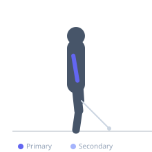

Exercise guide / Cable Rope Pushdown
Cable Rope Pushdown
The cable rope pushdown is a cable isolation exercise for the triceps using a rope attachment on a high pulley. At the bottom of the movement, the rope ends are spread apart, which supinates the wrists slightly and creates a wider range of motion compared to a bar attachment. This spreading action produces a more complete contraction of all three triceps heads, particularly the lateral head, making it a popular finisher exercise.
Primary muscles
triceps lateral head
triceps medial head
Secondary muscles
triceps long head
Stabilizers
transverse abdominis
Equipment
Cable Machine (High Pulley)
Optional
Cable Machine (Dual Pulley / Functional Trainer)


Starting position
- Attach a rope to the high pulley. Grip one end in each hand with a neutral grip, thumbs up. Stand facing the cable stack with the elbows bent at 90 degrees and tucked to the sides.
Setup
- Set the cable to the highest position. Attach a rope handle. Grip the knots at each end of the rope. Stand close enough that the cable is taut at the starting position.
Steps
- Step 1: Grip the rope ends, elbows bent at approximately 90 degrees and pinned at the sides.
- Step 2: Keep the upper arms stationary throughout — only the forearms move.
- Step 3: Exhale and press the rope downward by extending the elbows. As the arms approach full extension, spread the rope ends outward and slightly apart.
- Step 4: Hold the peak contraction with the arms fully extended and the rope spread, then inhale and return to the starting position.
Coaching cues
- Spread the rope ends at the bottom like you are trying to touch each hip
- Elbows stay pinned to your sides — they are the fulcrum, not the driver
Breathing
- Exhale on the pushdown; inhale on the return.
Range of motion
- Full extension with rope spread at the bottom; elbows at 90 degrees at the top.
Tempo
- 2-1-2-0
Common mistakes
- Not spreading the rope at the bottom, which reduces the range of contraction
- Letting the elbows drift forward away from the sides during the movement
Safety
- Keep wrists neutral throughout — do not flex or hyperextend them under load
Training
- hypertrophy: 10–20 reps
- endurance: 15–25 reps
- hypertrophy: 3–4 sets
- endurance: 2–3 sets
- Rest: {'hypertrophy': 60, 'endurance': 45}